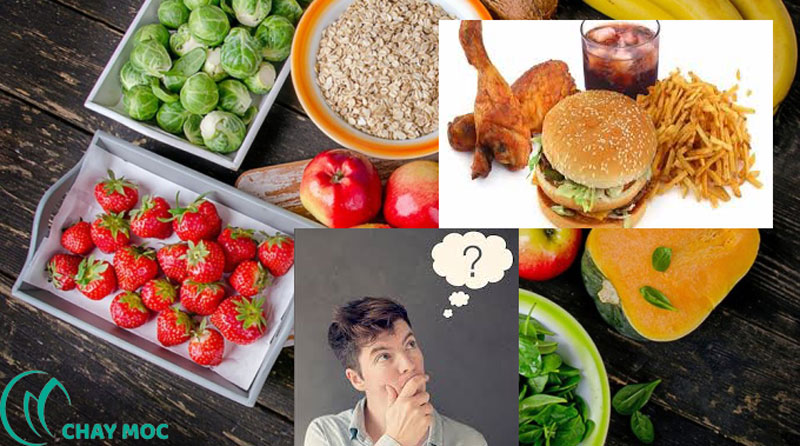

Làm Gì Để Có Một Cơ Thể Khỏe Mạnh?
Làm Gì Để Có Một Cơ Thể Khỏe Mạnh?
Khỏe mạnh là điều mà không ai không muốn. Con người chúng ta, nhắc đến bệnh tật thì ai nấy đều biết sợ. Nhưng chỉ khi thấy đau nhức cùng cực, sức khỏe cùng cực mới biết sợ. Toàn chỉ mất bò mới lo đi làm chuồng. Đợi nhà nát tường xiêu mới đi lo gây dựng. Chẳng hay rằng để đến lúc đó thì đã quá muộn màng.

Sức khỏe là một món quà vô giá. Câu đó đắt giá từng chút một, nhưng lại thường hay bị chúng ta bỏ qua. Vì một cơ thể đang bình thường, thì chúng ta còn mải đi lo hưởng thụ. Phải ăn làm sao cho ngon, uống làm sao cho khoái khẩu. Chứ mấy người còn đang khỏe mạnh mà biết lựa chọn đồ ăn tốt cho sức khỏe.
Chỉ người biết nhìn xa trông rộng. Thấu hiểu thực sự cái quý giá thanh thản của một cơ thể khỏe mạnh. Mới biết lựa chọn thực phẩm có lợi cho sức khỏe của mình và gia đình. Mới biết cách phòng tránh bệnh tật, điều chỉnh cơ thể bằng chính những thực phẩm bổ sung hằng ngày. Phòng thì luôn nhẹ nhàng và cho hiệu quả tốt nhất. Chứ để đến lúc chữa rồi, thì chỉ dựng lại được một phần nào đó. Chứ khó có thể được hoàn toàn. Đó là còn chưa kể chữa trị khó khăn và vất vả hơn nhiều phòng tránh.
Để biết lo lắng cho sức khỏe đã là tốt. Nhưng chúng ta cần có quan sát tỉ mỉ, có thử nghiệm và trải nghiệm rõ ràng, có phân tích đúng đắn khoa học. Mới đem lại nhiều lợi ích thiết thực. Chứ chạy theo số đông, chỉ biết nghe một chiều, không biết lắng nghe cơ thể và quan sát tốt. Thì lại khiến tiền mất tật mang. Bỏ ra bao nhiêu tiền của mang về những thứ nghe có vẻ thần thánh, mà kết quả chẳng được là bao.
Vậy làm sao để biết thế nào mới là sản phẩm tốt và mang lại nhiều giá trị cho sức khỏe? Không có cách nào khác, ngoài trải nghiệm thử và chọn lọc dần dần. Song song với đó là học hỏi và tìm hiểu những kiến thức, kinh nghiệm quý báu của những nguồn đáng tin cậy. Chúng ta dần sẽ tự xây dựng được những thói quen tốt, những cách ăn uống và chế biến lành mạnh. Biết cơ thể mình cần bổ sung điều gì, và nên tránh xa điều gì.
Có được những thói quen tốt, khiến sức khỏe luôn dồi dào. Giúp bạn làm được nhiều hơn nữa, cho cuộc sống ngày càng tốt đẹp hơn. Cuộc đời của chúng ta, trở nên ý nghĩa hơn bao giờ hết. Bắt đầu từ những hành động rất nhỏ của hiện tại này. Bắt đầu từ những gì chúng ta ăn…
Theo Chay Mộc
Thuốc Đông Y Gia Truyền
Địa Chỉ: Khu đô thị HATECO Xuân Phương, Hà Nội
Mobile: 084.250.1993
Website: suckhoechonguoiviet.github.io/trangchu.html
Page: https://www.facebook.com/suckhoenguoiviet30